Plotting Process
Table of Contents
Init
Creating a plot starts with sourcing a photo.
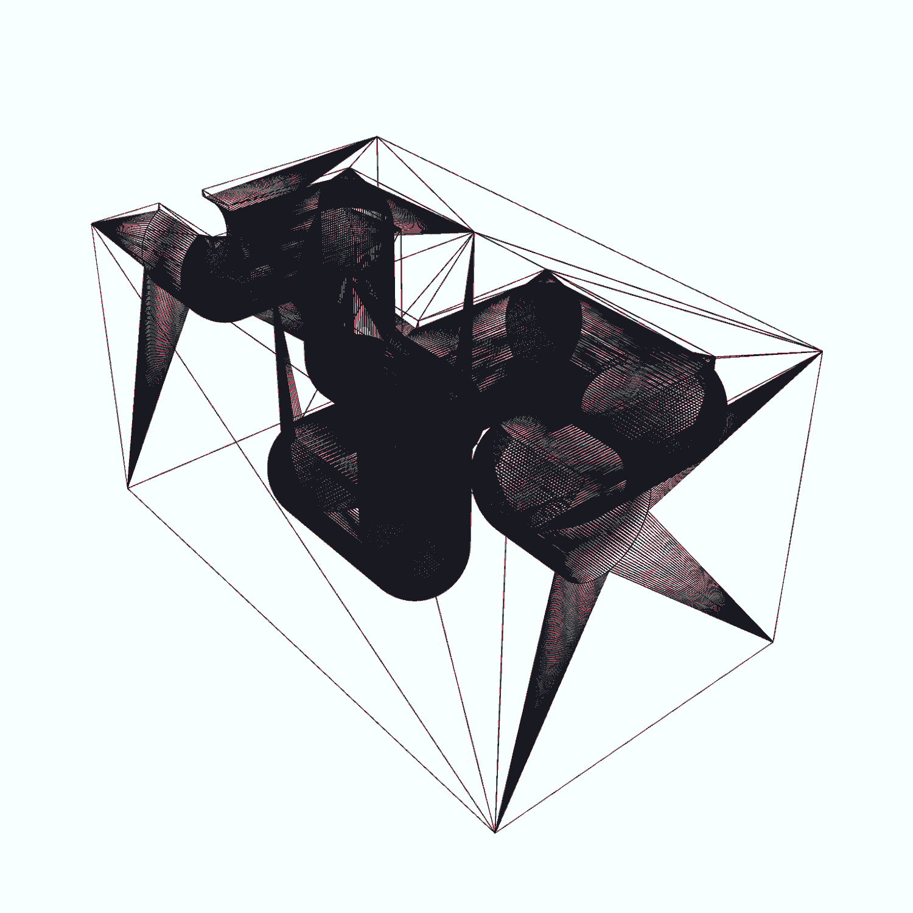
"5 color quantized wireframe mesh of a joinery mechanism I made a year ago."
Edit
I use a script in the pen-drive process to color correct colors to match available G2 colors.
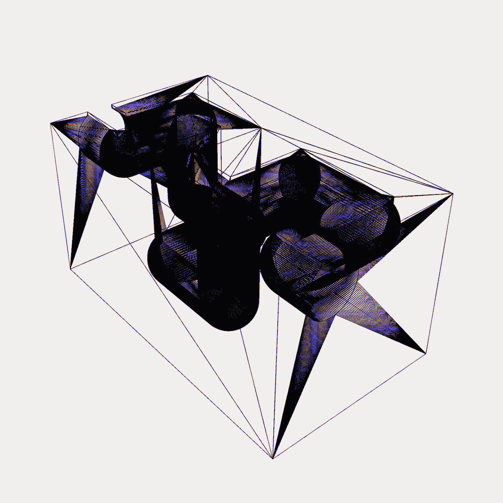
Corners
Adding corners to the image to ensure the created SVGs all have the same dimension to make slicer orientation easier.
"You probably don't notice it, but the top left and bottom right corners now have the unique colors."
Vectorize
Using Inkscape I vectorize each color into its own SVG file.
"Black layer"
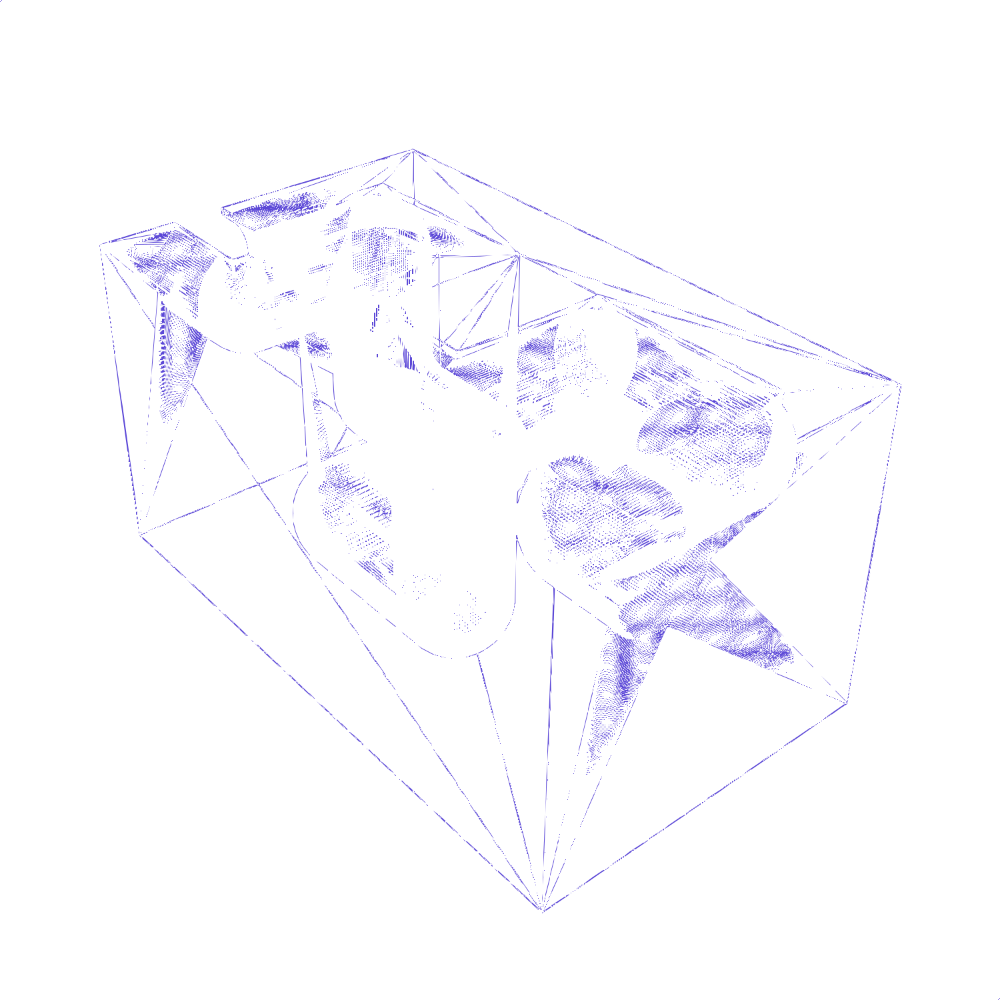
"Purple layer"
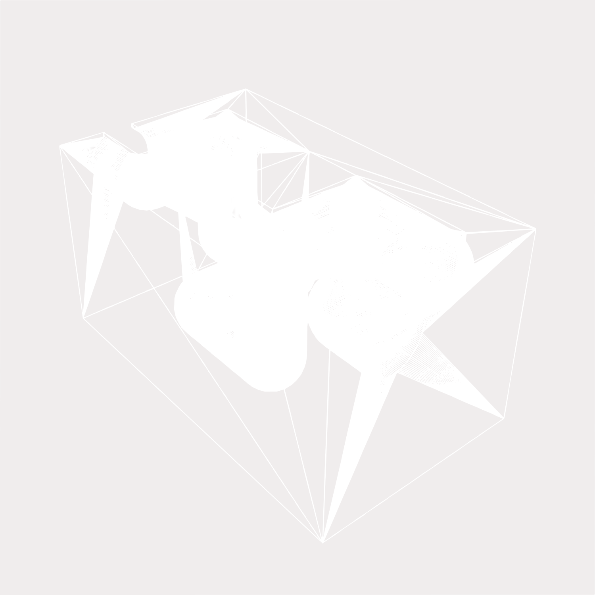
"White layer"
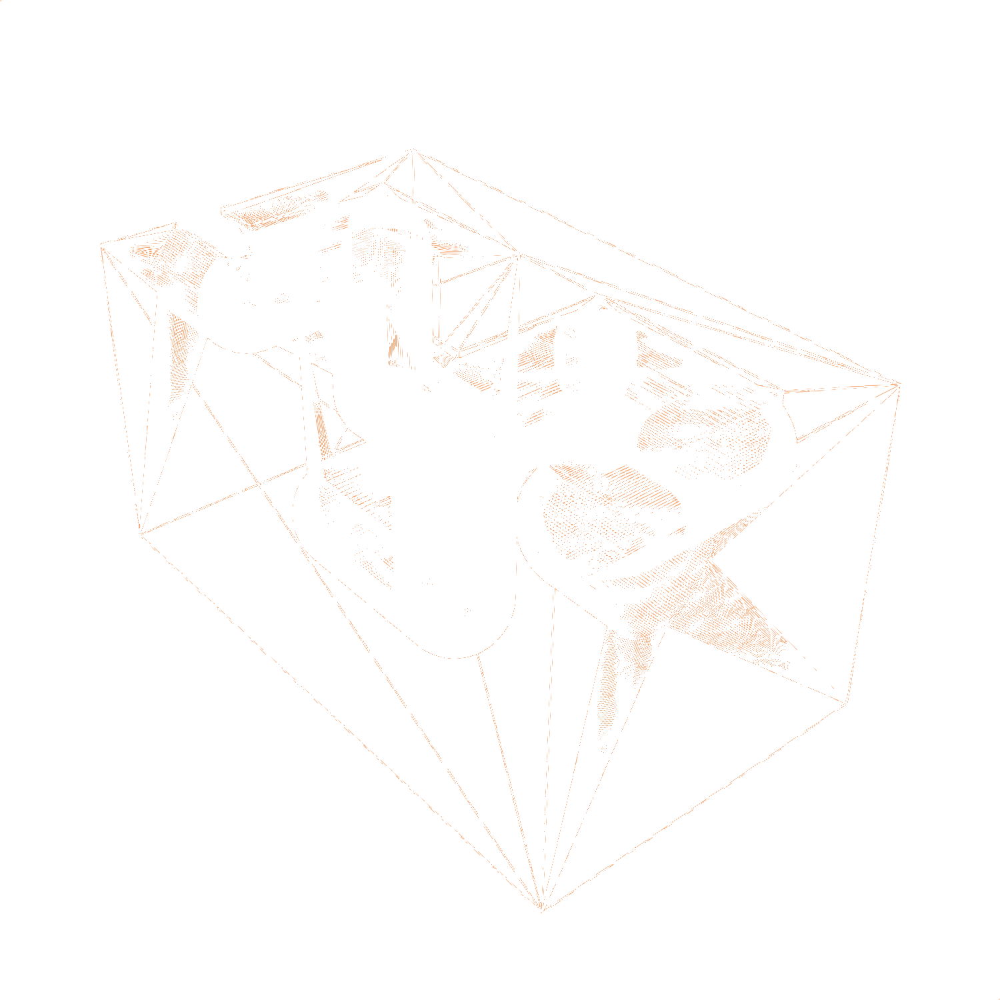
"Yellow layer"
Import
Next up is opening up the base nextruder toolholder .3mf file and importing the created SVGs.
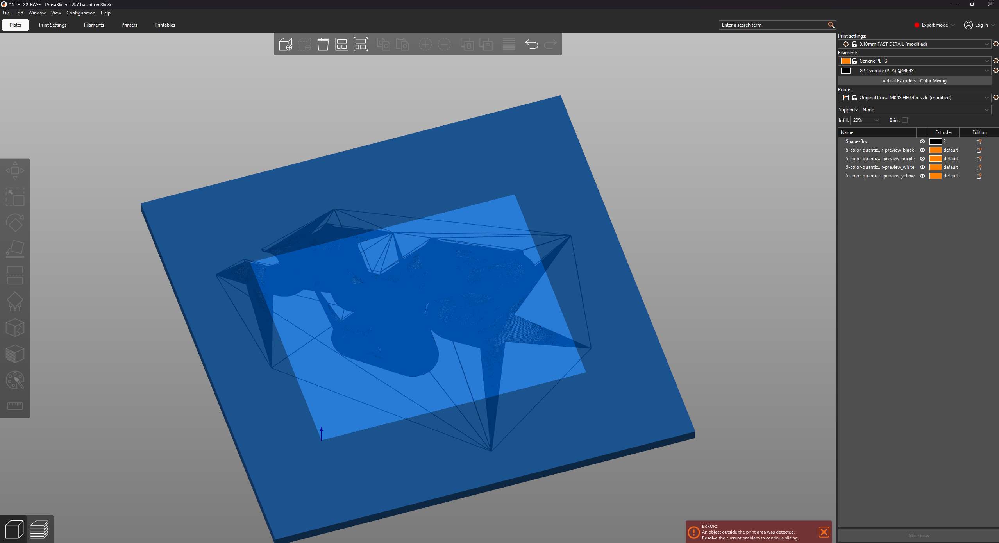
"The result of importing the SVGs into the 3MF file."
Config
Scaling the imported SVGs to match the reference object dimensions to fit the plottable area, set the imports to use extruder 2, and messing around with infills...
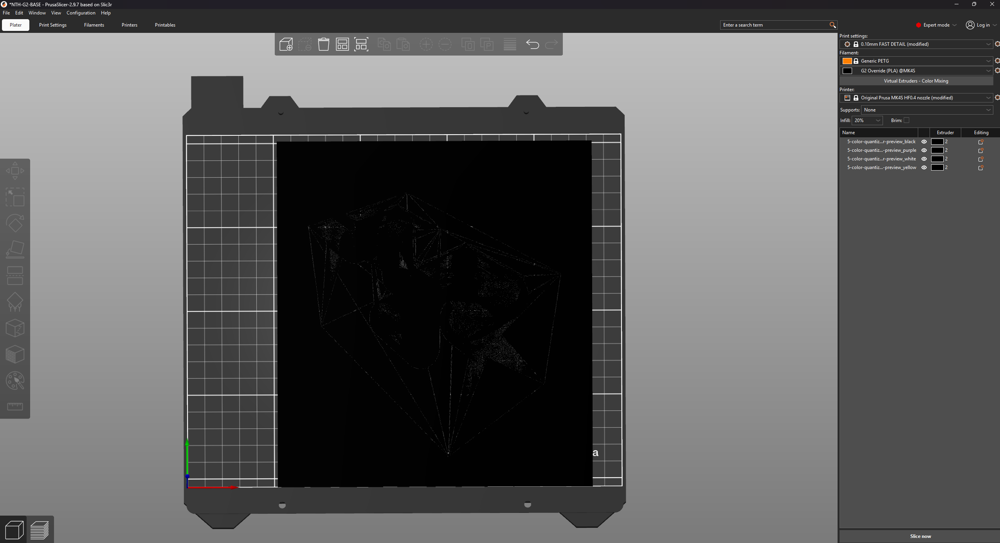
"The result of configuring."
Slice
Slicing the 3mf file into a gcode.
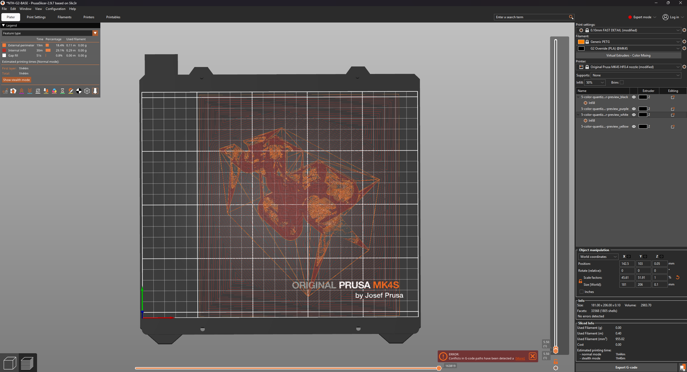
"The result of slicing."
Plotting
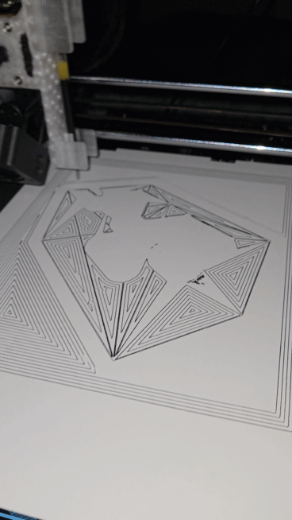
"GleebyDeeby plotting a full black version of the plot. Oops."
Scan
The final result. Some detail is lost with the white layer being plotted black. It probably would have looked better with color.
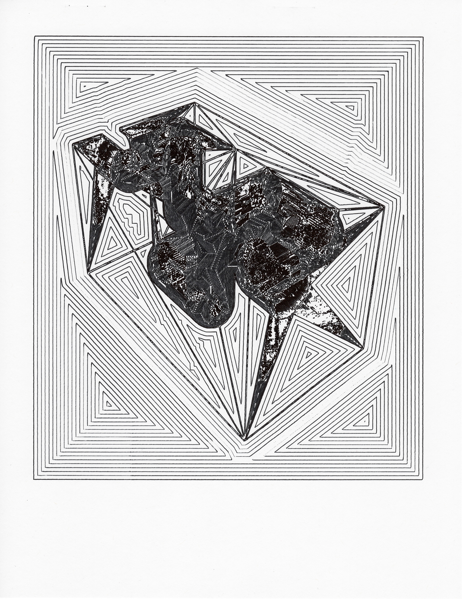
"The final result."
Splash
I create a splash image using a template for making repos with the plotting files.
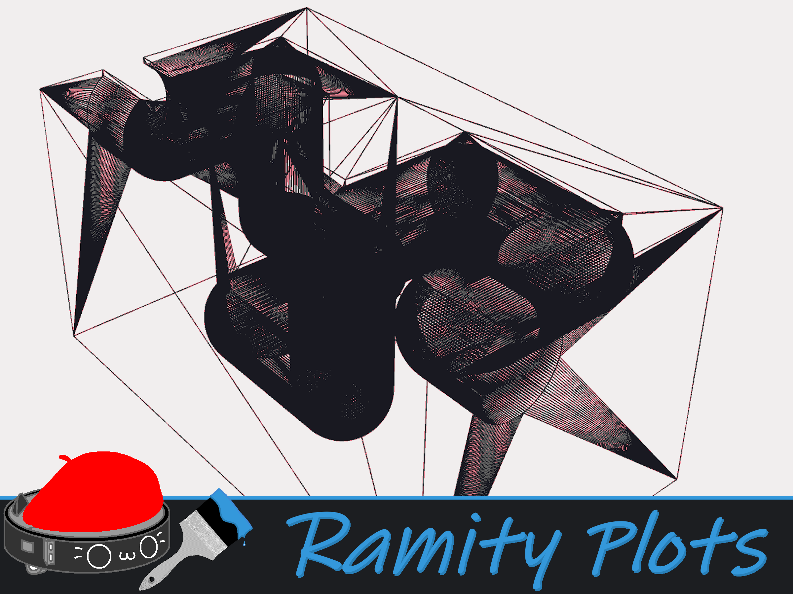
"Such a dapper looking artist."
Repo
Lastly, I upload all the files to printables so others can make their own plots. Check it out here.
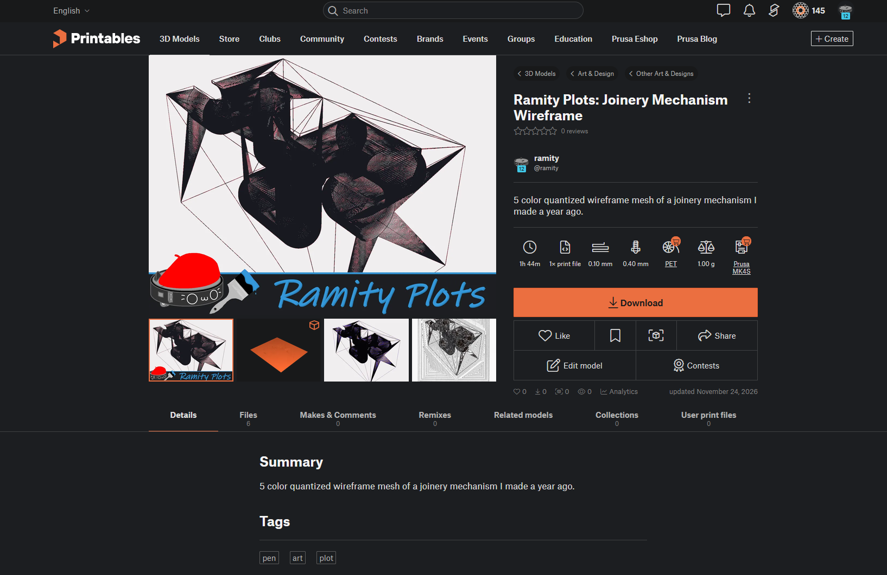
"As seen on your screen."